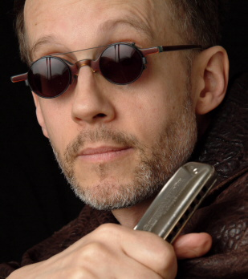

пресс-релиз к гастролям 2008 г. в Москве
Cемикратный "Гармонист года" за всю десятилетнюю историю Canadian Maple Blues Award 1997-2007гг.

Родившись в Гаване, на Куба, del Junco (дел Хунко - в свободном переводе "от тростника/камыша") эммигрировал с семьей в возрасте одного года. Первую ноту он сыграл на губной гармонике в возрасте 14 лет, дебютировав со своим преподавателем математики в высшей школе на студенческой вечеринке талантов. В свои ранние 20-ые годы дел Хунко был поглащен карьерой в визуальном искусстве. Он окончил четырехгодичную программу Колледжа Искусства Онтарио с отличием, специализируясь в скульптуре. Скульптура сыграла определенную роль в его музыкальном мировозрении: "Музыка – всего-лишь иной способ создания текстур и форм".Играя на обычной диатонической гармонике, Карлос выработал уникальную способность играть хроматически используя недавно разработанную технику "overblow", которой его научил виртуоз джаза Хавард Леви (Howard Levy). В общей сложности, этот подход к диатонической гармонике, несмотря на то, что оно более сложное в исполнении, во многом более выразительное и богаче чем механический тон, выдаваемое хроматической гармоникой. Карлос является одним из немногих первопроходцев этого метода "overblow", превнося музыкальную солидность тому, что многими в музыкальной индстрии до сих пор считалось посредственным фольклорным инструментом. Богатый звук, воспроизводимый дел Хунко, является чувственным, душевным и сексуальным, тем не менее не лишен сырости, типичного для блюза.
В 80-ых дел Хунко играл со многими группами, в том числе c латино-американской/регги/ r&b "Eyelevel", "Ontario College of Art Swing Band" c Bill Grove, а также имел 6-ти летний ангажемент с r&b группой "The Buzz Upshaw Band". Вместе с Kevin Cooke в 1990 году он создал blues/jazz/fusion группу ”The Delcomos”. Он записывался с Marcel Aymar (Cano), Cassandra Vassick, Oliver Schroer, Zappacosta, и также работал с Dutch Mason, Domenic Troiano, Hoc Walsh (Downchild Blues Band) и Holly Cole.
В 1991г. дел Хунко сочинил и исполнил музыку к получившему награды спектаклю Tomson Highway Dora Dry Lips Oughta Move To Kapuskasing. Спектакль объездил Канаду и исполнялся втечение семи недель в театре Торонто Royal Alex Theater.
В 1993 г. дел Хунко выиграл две золотые медали в Троссинге, Германии, на конкурсе Hohner World Harmonica Championship. Он был признан лучшим в мире в обеих классах diatonic blues и diatonis jazz.
С ныне покойным Bill Kinnear Карлос дел Хунко выпустил в ноябре 1993 года свой первый CD Blues на независимом лэйбле Big Reed Records. Богатая коллекция классики блюза являлась результатом совместных усилий с Kinnear, который сыграл на аккустической и dobro гитарах и исполнил ведущий вокал. Пять из шести обозревателей Toronto Blues Society выбрали Blues в своих выпусках топ-десятки в 1993 г.
В марте-апреле 1995 года дел Хунко съездил в Чикаго по стипендии Canada Council для учебы у Howard Levy. В этом же году был выпущен собравшего много отзывов Just Your Fool , являющемся жгучим живым сэшном с Kevin Breit на гитаре, Al Duffy на басе и Geoff Arsenault на ударных. Именно этот CD и работа с Thom ”Champagne Charlie” Roberts Big Road Blues принесли Калосу в 1996 году награду Blues Musician Of The Year.
Дел Хунко продолжает выпускать эклектику музыки в Blues Mongrel (2005), шестой по счету альбом и дебют на лэйбле Northern Blues. В этом альбоме ярко выражен его смелый стиль на гармонике, который заигрывает с латино-американскими ритмами (”Let’s Mambo”), с рокабили (”Run Me Down”) и даже с выделяющимся стилем гибридом джаз-ска (”Skatoon”). В качестве певца голос Карлоса настолько же уникален насколько его игра на гармонике. Замечательная игра на гитаре Kevin Breit, один из самых занятых сэшн-гитаристов в Канаде, а теперь уже и в США, благодаря во многом его работе с Norah Jones и Cassandra Wilson, добавляет оригинальность к 13-трековой коллекции.
Карлос регулярно гастролирует в Канаде с 1996 года и часто гастролирует в Германии и США. Он выступал на всех ведущих джаз, блюз и фолк фестивалях в Канаде.
За всё время своих концертных и фестивальных выступлений со своей группой вы можете услышать эклектическую смесь джаза, блюза, свинга, латиноамериканского ритма, нового орлеанского фанка, а иногда и африканского, хип-хопа и ска ритмов. В качестве певца, голос Карлоса настолько же уникален, насколько игра на гармонике, предлагая свежую интерпретацию классических стандартов блюза и джаза.
Являясь заслуженным блюзовым исполнителем, музыка маэстро гармоники дел Хунко пересекает все границы, переходя в искусство и передавая музыкальную солидность тому, что до сих пор многими считался побочным фольклорным инструментом. Он полностью владеет гармоникой, играя ней со всеми нюансами и тонкостью виолончелиста, до тяжелого звучания блюзового рока.
Карлос смешивает свое уважение традициям со свежим, инновационным и по-настоящему современным подходом. Зрители всегда охвачены увлечены на каждом выступлении и возвращаются послушать вновь и вновь.